Bizen, Okayama: things to do, food and stays
Bizen · Okayama
Bizen
Highlighted on the Okayama map.

Stay
CYAN 思庵 （旧） EL SUENITO HINASE
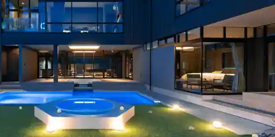
CYAN Omoi Iori (Kyu) EL SUENITO HINASE
備前ホテル陶
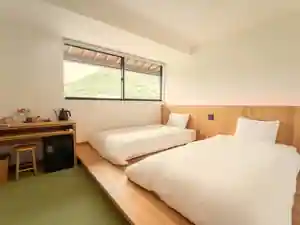
Bizen Hotel To
ペンション おやじの海
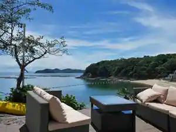
Pension Oyajino Umi
ＨＯＴＥＬ ＡＺ 岡山備前店

HOTEL AZ Okayama Bizen
Inn in Hatada, Bizen; 15-minute walk from Jrkakato Station.
あしたのＭ
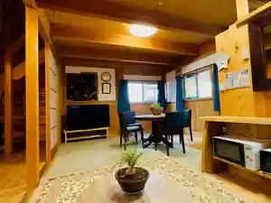
Ashitano M
ログあした
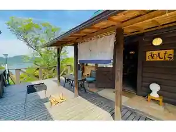
Rogu Ashita
岡山日生 料理旅館 魚美味倶楽部 美晴
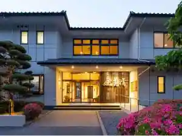
Okayama Nissei Ryori Ryokan Sakana Bimi Kurabu Miharu
旅館つり幸
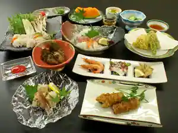
Ryokan Tsuri Sachi
Ryokan inn in Nissei, Bizen with kaiseki dinners.
まるごや
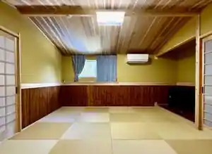
Marugoya
ARCADIA VILLAGE
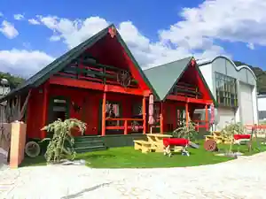
ARCADIA VILLAGE
ペンションみかんの郷
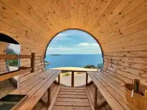
Pension Mikanno Sato
Pension in Nissei, Bizen with scenic views.
Dining
タマちゃん
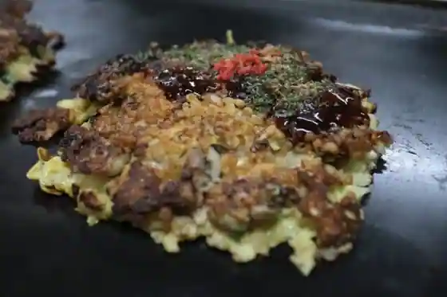
Tama Chan
溢彩流香
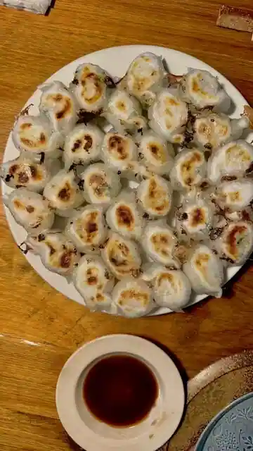
Itsu Sairyu Kaori
お好み焼 もりした
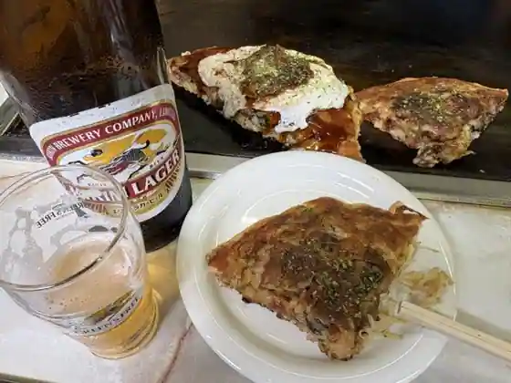
O Konomi Yaki Morishita
お好み焼 あらた
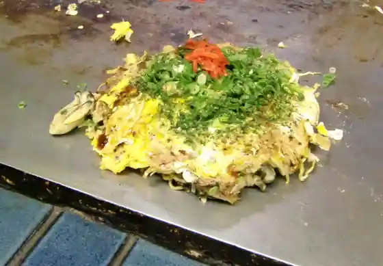
O Konomi Yaki Arata
お好み焼き ほり
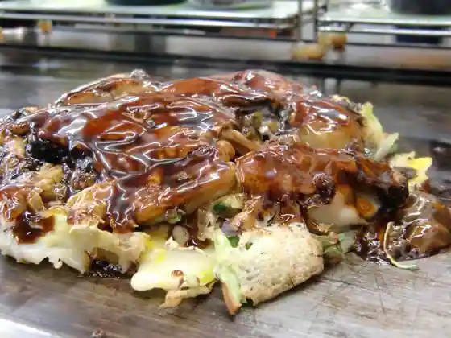
O Konomi Yaki Hori
大阪屋
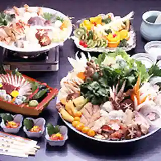
Osaka Ya
浜屋 みっちゃん
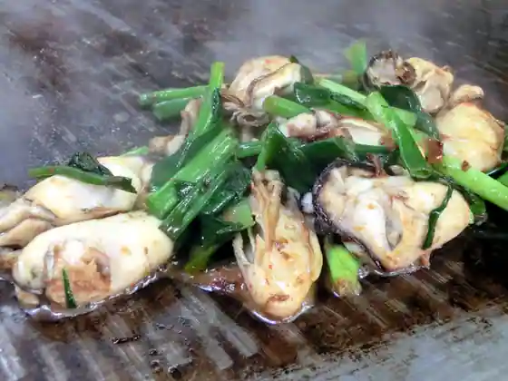
Hamaya Mitchan
うまうま
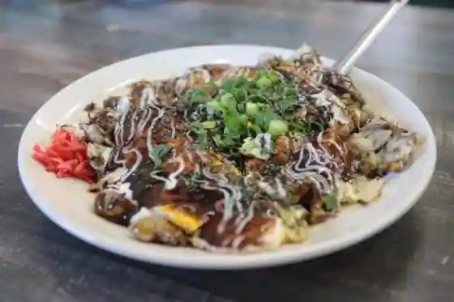
Umauma
海鮮料理 磯
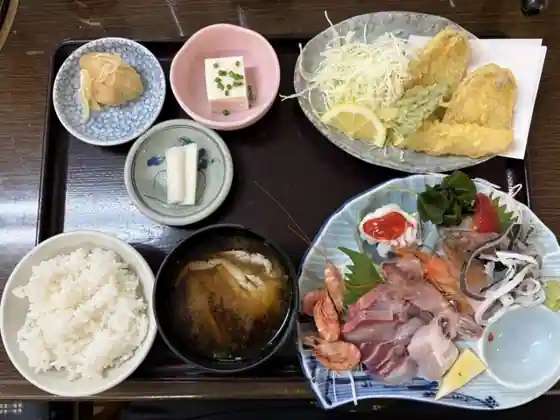
Kaisen Ryori Iso
五味の市
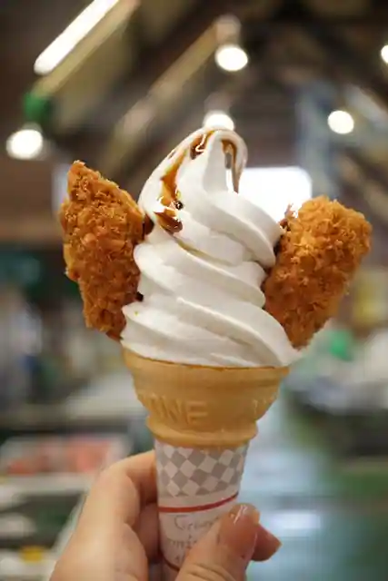
Gomi No Shi
シバベ
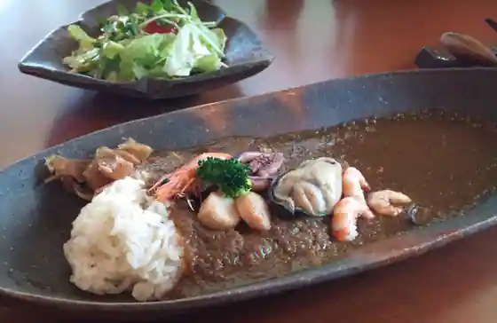
Shibabe
海の駅しおじ
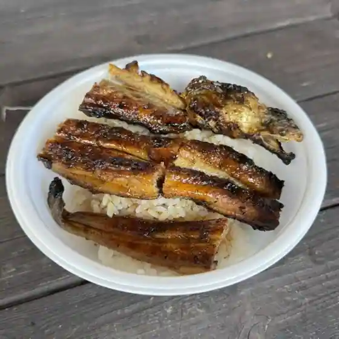
Umi No Eki Shioji
ステラカフェ
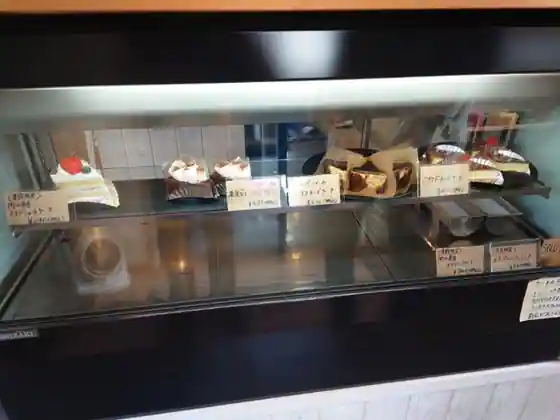
Sutera Cafe
UDO
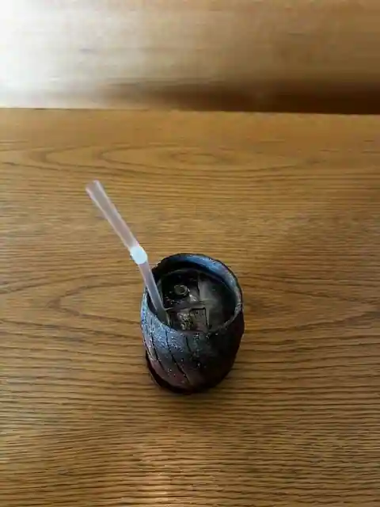
UDO
Cafe MUGENAN+
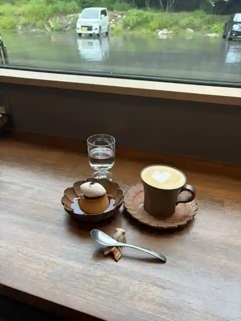
Cafe MUGENAN+
お好み焼 まるみ
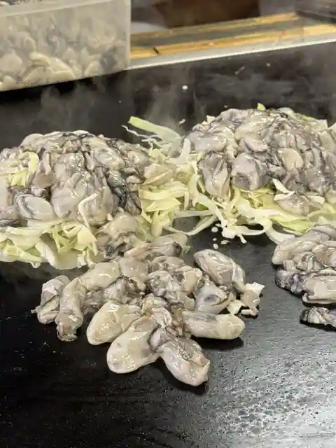
O Konomi Yaki Marumi
中華料理忠峰
Chukaryori Tadashi Mine
ザ コーヴカフェ
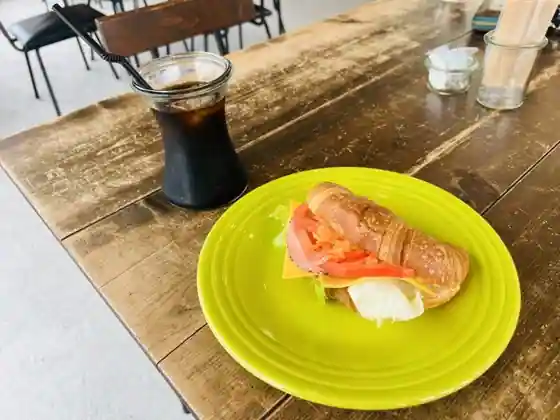
Za Kovu Cafe
uzumé
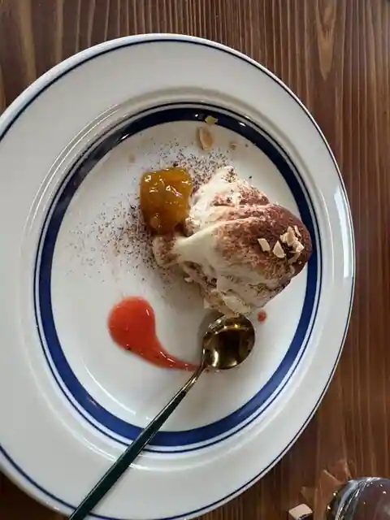
uzum E
泉富久
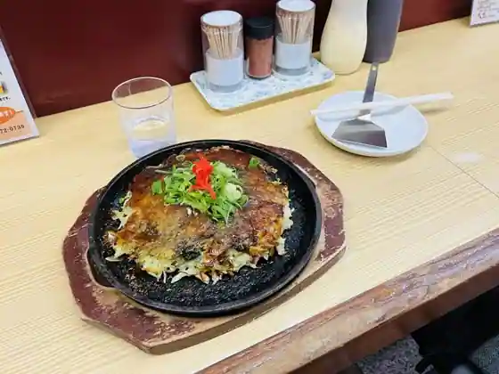
Izumi Fuku
山東水餃大王
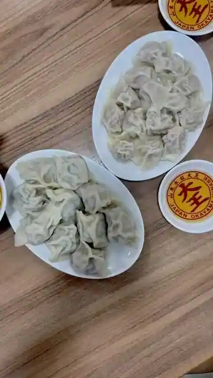
Santo Mizu Ko Daio
夕立
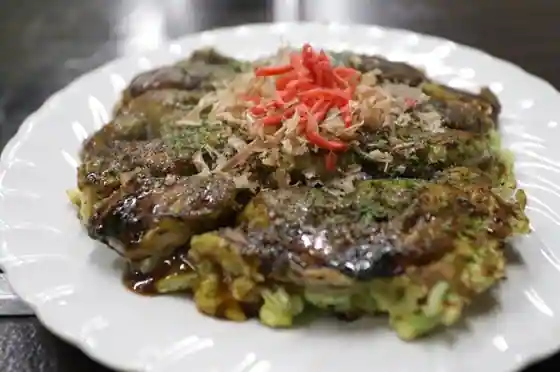
Yudachi
閑谷手打ちそば 椿庵
Shizutani Teuchi Chisoba Tsubaki Iori
ヴィラステラ
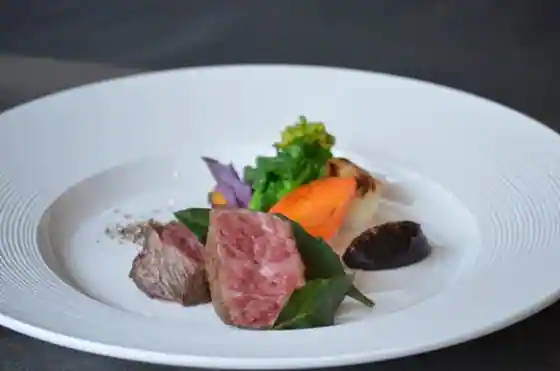
Villa Sutera
Sights
Bizen Umi no Eki

Kyu Shizutani Gakko

Ko Shima

Gomi no City

Ibe
Minato no Mie Ru Oka Park
Bizen Art Museum (Kyu Bizen Ritsu Bizen Yaki Museum)
Hen Tetsu Roman Kaido
Bizen Yaki Dento Sangyo Hall
Umi no Eki Shioji
Tsuru Shima
Atama Shima
Tenshin Shrine
Hachi to Tera Furusato Mura
Kakui Shima
Bizen ♡ Nissei Bridge
Kodai Experience no Sato Mahoroba
Furutsu Park Bizen
Bizen Ibe Sports Park
Otaki Yamanishi Hoin
Gairin Beach
Atama Shima Tanuki Yama Lookout
Dai Ta Fu Shima
Hachi to Terakawa Dam
Takura Ushi Shrine
Bizen Kanko Boranteiagaido Kyokai
BIZEN Chunambei Art Museum
Momo Kei Do
Fukaya Falls
Nissei Sho Shima
Kakui Shima Mikan Sono
Miya no Shita Beach
Atama Shima Guraundogorufu Ba
Nissei Sports Park
Mugen Iori Bizen Yaki Workshop
Setonaikai National Park Yudachi Ju Yama
Ichiyo Kama
Bizen Toki Kamato Ibe Minami Dai Kamato
Tenpo Kama
Sambasu (Nissei Town Kankojoho Center / Bizen Tourism Association)
Iri Gyokyo Mana City
Dai Ta Fu Gyoko Genroku Bohatei
Wa I Taniike Taya Hakasho
Bishu Kama
Atama Shima Bridge
Bizen Yaki Gyararii Sanroku Kama
Masamitsu Tera
Fussa Tera
Ko Shima Mikan Sono
Ka Ko Ura Rekishi Bunka Kan
Atama Shima Mikan Sono
Shima Workshop (Shima Yukihiro)
Bizen Folk History Museum
Gyararii Shozan
Shizutani Shrine
Dai Ta Fu Shima Shizen Kenkyu Michi
Nissei Town Gyogyo Kyodokumiai Atama Shima Shisho
Kasuga Shrine
Shi Retsu Anato
Bizen Toki Kamato Ibe Nishi Dai Kamato
Bizen Toki Kamato Ibe Hokudai Kamato
Shoen
Otaki